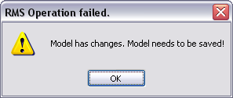
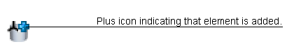

Figure: Changed Model Element.
If changes are not yet committed to the repository server, they can be reverted by updating the local version against the server version and releasing the lock.
In case a model element has changes that are not yet committed, you can revert those changes. Right-click the model in the Outline view and choose Revert Changes.
Figure: Select Revert Changes
The reverting option now unlocks the model element and reverts its local changes. In case no local changes exist, the element is unlocked only. Please note that the model has to be saved before this operation. Otherwise a warning dialog opens.

Figure: Warning indicating to save Model first.
The Revert Changes option is only available for model elements, if these are locked. It is always available for a model, but in case no model elements are locked, the Revert dialog does not open and the following message dialog pops up instead:
Figure: Warning indicating that no elements are locked for editing.
After selecting the Revert Changes option, a dialog opens, showing all locked elements. Here the changes on elements that should be reverted can be selected.
Figure: The Revert Changes Dialog.
Diagrams containing model elements with reverted changes, are updated automatically.
Overlay icons indicate the sort of changes on elements. The pen icon indicates changes on an element that already existed:

Figure: Changed Model Element.
The plus icon indicates that an element has been added to the model:

Figure: Added Model Element.
The cross icon indicates that an existing element has been deleted from the model:

Figure: Deleted Model Element.